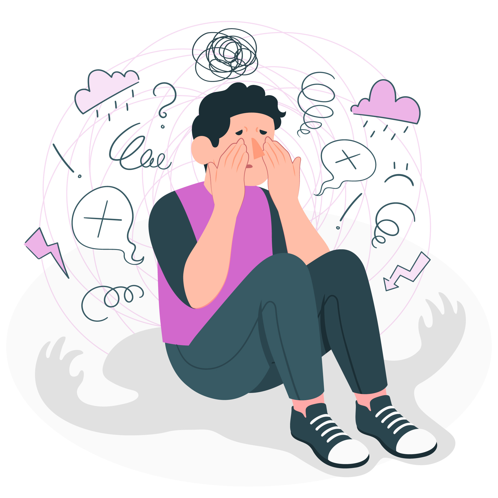

LABORATÓRIO DA MENTE
Inicio
Ajuda
Tudo Que você
Precisa Saber
Sobre Ansiedade
O que desencadeia a Ansiedade ?
Quais são os tipos de ansiedade ?
Quais são os fatores de riscos que uma pessoa desenvolva ansiedade? e aligação entre ansiedade e depressão ?
Como saber se a pessoa tem depressão ou ansiedade?
Teste de Depressão, Ansiedade e Estresse

Leia um Livro